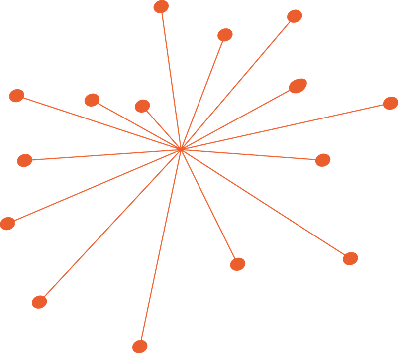
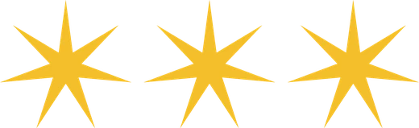
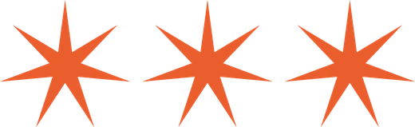

- Inicio
- Marketing Fest
- 2da edición

27 y 28 de octubre de 2026
Marketing Fest 2026
El 27 y 28 de octubre de 2026 la FCE UBA fue el lugar del marketing. Vinieron más de 2600 personas a dos días de charlas y paneles con Meta, McDonald's, Pepsico, Rappi, CCU, Tiendanube, Bayer, Logitech y muchas más. Gracias por venir.
- +2600
- personas
- +30
- speakers
- 21
- charlas y paneles
- 8
- presentaciones para descargar
Las presentaciones
ManuEstán todas juntas, separadas por día. Bajá las que quieras en PDF.

Gracias a las marcas que lo hicieron posible
Main sponsors


Sponsors


Media partners


Con el apoyo institucional de


Marketing Fest · 3ra edición
Avisame cuando salga la 3ra
Dejanos tus datos y te escribimos apenas abra la inscripción. Es libre y gratuita, pero los cupos vuelan.
¿Tenés una marca? Hablemos.
¿Querés sumar tu marca a la 3ra edición del Marketing Fest u organizar un evento propio? Escribinos.